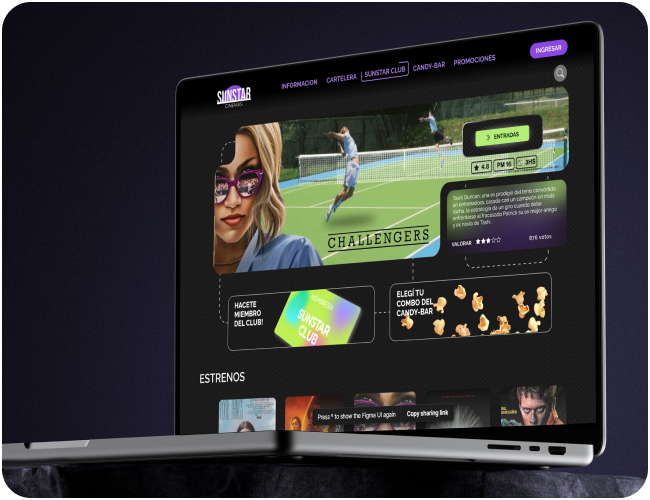
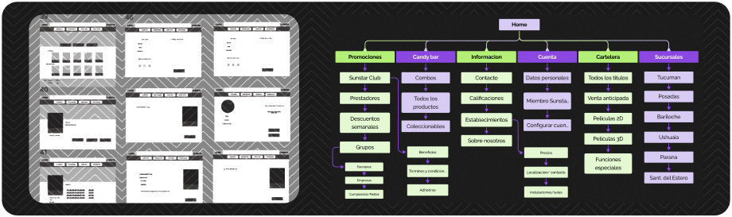
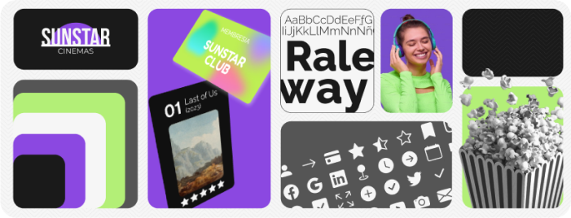

Cinemasunstar.com is the official website of the Sunstar cinema chain in Argentina. The site serves to inform you of the locations of its branches, presents the catalog of its billboard and schedules, in addition to the possibility of purchasing tickets and possible information on promotional opportunities.

Nielsen heuristic principles were used to evaluate the usability of the cinesunstar.com site to identify potential user issues and design a more intuitive interface.
Regular and irregular customers of various movie theaters were interviewed via video calls to gather insights on user experiences both at Sunstar and competing sites.
The methodology allowed for flexible questioning, and the collected data, along with benchmarking and trend analysis, helped define two user archetypes based on their movie-going habits, interests, and expectations for the user experience. Other analysis tools used were a User's journey map and a Lean UX canvas.
For this project I carried out two tree-testing, one with the current architecture of the site and another with the IA that I proposed based on the user-testing conducted previously. Then I devised a matrix prioritizing ideas that favor user desirability and business viability.
Finally, I outlined the main task flows to be optimize, with the corresponding wireframes.

Voice and Visuals I outlined the company's purposes and fundamental values. Following the golden circle rule (why?- how? what?). The brand tone and voice map and copywriting guide. I wanted both the site's appearance and copywriting to represent the ideals of emotion, enthusiasm, and connection.
I develop the design system and visual style guide. including grids and spacing, use of typography and imagery elements, component styles and motion UI.
From there I developed the functional prototype in Figma suitable for being tested by users, the results were subjected to data and metrics analysis, from which I managed to distinguish opportunities for improvement and produced a new iteration of the product.

Based on the findings, most issues are related to visual accessibility. The most urgent task is to improve the location and visibility of problematic elements to enhance the user experience.
Website redesign is an ongoing process. Regular user feedback should be collected to continually iterate and optimize the design and functionality.